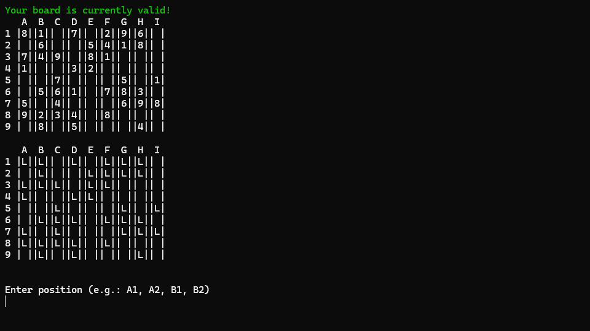

Console Rendering API

This was made for an assignment. It's a working Sudoku app!
This program can generate 4x4 and 9x9 boards. The catch is, it does
not generate the best boards.
For context: in Sudoku, boards do not have more than one possible
solution. Otherwise, it's bad. Also, it's generally better to have
less numbers on the board (while making sure the solution remains
unique).
Alas, this program does not follow those criterias. It generates a
complete board, and randomly removes half of the numbers from the
board.
In ChatGPT terms:
- ❌ Unique board
- ❌ Minimized clues
- ✅ Sucks
It's okay though. It partially does what Sudoku does, and normal
people won't know that it's bad... If we ignore the aesthetics.
Anyway, I added quality-of-life features, so they can't complain.
In Sudoku, you cannot overwrite a number that was already there. It'd
be cheating. There is no easy way to show which cell is locked. Well
actually, there is, but I did not know it at the time. But anyways, my
solution was to create a secondary board with the locked cells. I had
to modify a few stuff and it may or may not have been a pain, but it
works.
Overall, it was a fun project, but I don't like Sudoku that much so I
will probably never touch this ever again.